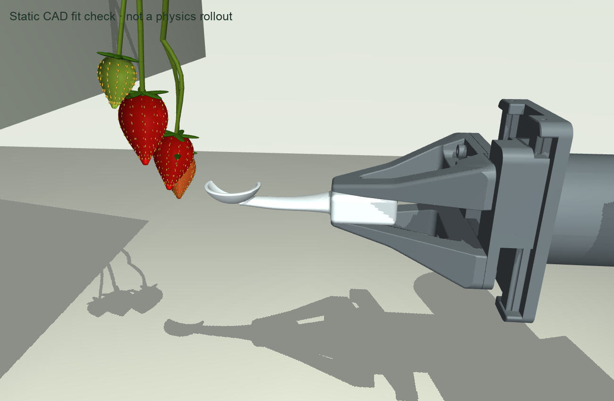
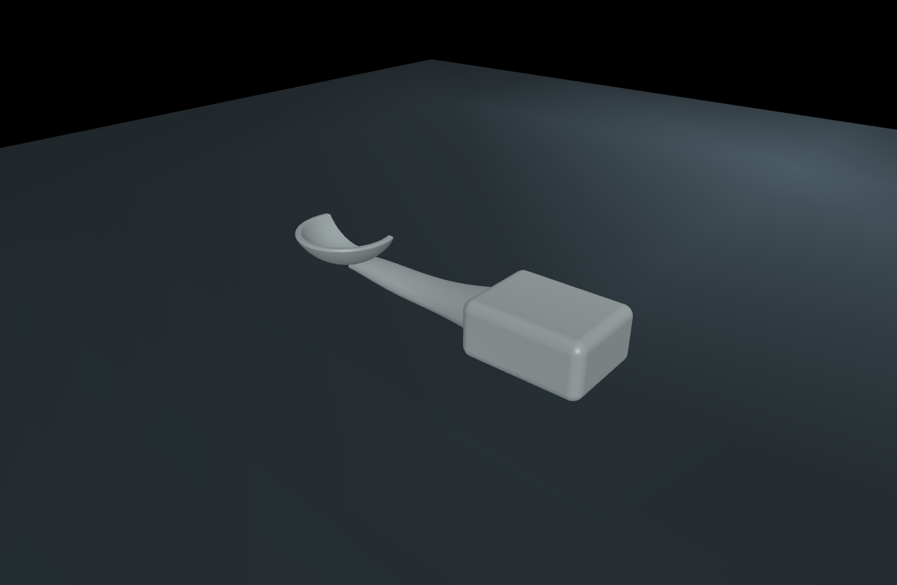

Cradle 01 — rejected
This geometry is not an accepted tool design. Training is paused. Its entry, support and retention mechanism must be resolved before another CAD revision.
A shaped support tool for the YAM gripper. One connected CAD solid, built in millimetres, with a flat jaw interface, tapered neck and an open spherical cradle.
The side opening is a clearance hypothesis; its size remains to be validated against the berry cluster. The neck changes section smoothly and joins the underside of the cradle. Gripping faces remain flat for the YAM's parallel jaws.


Engineering scope and next checks
This is a prototype design, with an assumed PA12 density of 1.01 g/cm³. The STEP exchange file is re-imported and checked for one valid solid and matching volume. The bowl wall uses concentric 17 and 15 mm spherical surfaces; the grip corners use a 3 mm radius. The source exposes the dimensions and feature construction.
Print orientation, surface finishing, stiffness, friction, fruit contact pressure and bruising still require validation. This CAD replaces the crude simulation tool; it has not yet been trained or physically validated. PPO training is paused until its collision geometry and grasp are checked. The earlier 11/12 score belongs to the rejected fixed-mount tool.